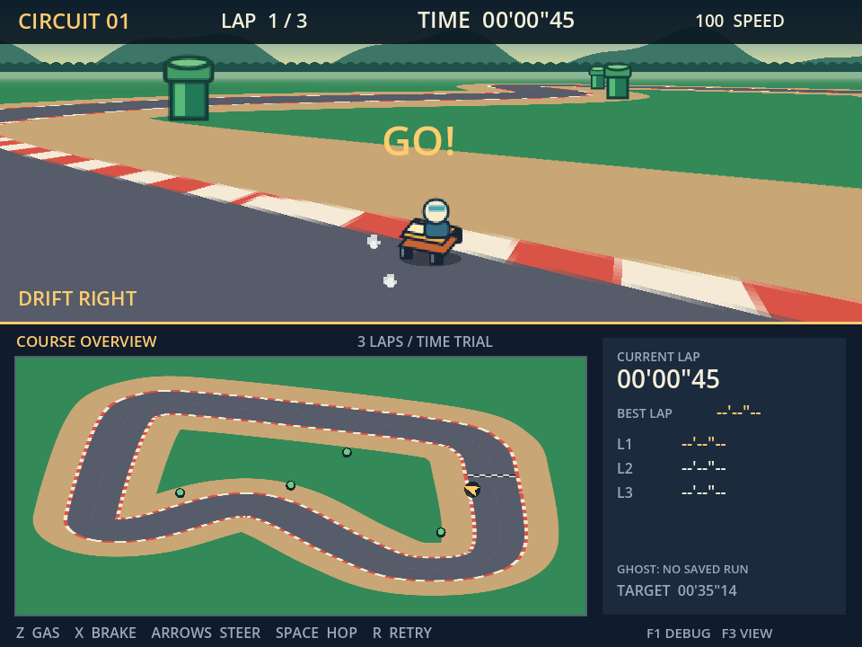

GAME CREATOR / 卒業制作のはじめかた
実際に作った試作ゲームGodot EngineとAIで
デザイナーでも
ゲームが作れる！
今日は、このようなゲームを作るための
「接続方法」を学びます。
ゲームクリエイター科 4年生
Windows / Godot 4.6.3 / Codex

CIRCUIT 01｜実プロジェクトの画面
試作段階。最終アート・音声などは未完成。01 / まず結論
Godotでゲームを作るときの基本
Godotの場合は、
エージェントにお願いするだけでOK！
Godotと連携して！→Godotにプロジェクトを作って→こんなゲーム作って！
だから、立木は・・・プロジェクトも開けない・・・ｗ
01 / 役割を知る
登場するのは、まずこの3つ。
01自分
作りたいものを決める。
お願いする。
遊んで、確かめる。
判断する人02Codex
お願いを読み、
ゲームのファイルを
作ったり、直したりする。
作業を進めるAI03Godot
ゲームのファイルを読み、
画面に表示して
動かす道具。
動きを確かめる場所 AIエージェント ＝ お願いを受けて、必要な作業を進めるAI。
02 / 接続の基本
同じ「ゲームの箱」を使う。
両方を起動しただけでは、同じゲームを扱うとは限りません。
自分の
お願い
→Codex
→ゲームの
ファイル
→Godot
→動作確認
プロジェクトフォルダー
ゲームの材料と設計図を入れる箱。
CodexもGodotも、この箱を使います。
例：C:\Games\my-first-gameproject.godot ← プロジェクトの目印画像・音・場面・動きのファイル
確かめた結果を、またCodexに伝える。これが制作のくり返し。
03 / 用意するもの
まず基本。MCPを選ぶなら追加。
最初から必要ゲームを作る基本セット
- Windows版のCodexを起動・ログイン
- Godotを用意・起動
この実例は4.6.3の通常版（C#不使用） - 自分のゲームの保存先フォルダー
今回のMCP方式で必要AIから道具を呼ぶ準備
- Node.js と npm
MCPを動かす土台と、入れるための道具 - Coding-Solo製 Godot MCP
- Godotの実行ファイルの場所
Godotは無料。Codexの利用条件・利用枠は別に確認します。
提供元のNode.js条件は18以上。授業ではサポート中のLTS版を選ぶ。料金は一律に無料とは案内しない。
04 / 最初のプロジェクト
Godotで「空の箱」を作る。
1場所：Godotの最初の画面
Create（作成）を押す。
2名前と保存先を選ぶ
Browseで空のフォルダーを選ぶ。
3Compatibilityを選び、Create
画面を描く方式。今回は2D向け。
Create New Project 再構成図
My First Game
C:\Games\my-first-game 2
● Compatibility
3 Create
成功の目印：編集画面（エディター）が開き、保存先に project.godot がある。
project.godot＝Godotが、このフォルダーをゲームのプロジェクトだと認識するためのファイル。ボタン名は4.6公式英語UI基準。日本語表示では名称が異なる場合があります。
05 / Codexの作業場所
Codexに、同じ保存先を渡す。
① Codexを開く→② ローカルのフォルダーを選ぶ→③ その場所でチャット
選ぶのは C:\Games\my-first-game のように、
project.godot が入っているフォルダーです。
コピーして使う・確認のお願いこのフォルダーのGodotプロジェクトを確認してください。
まず、Godotの場所、バージョン、project.godotの場所を調べ、
ゲームを作る準備ができているか教えてください。
成功の目印：返答に、自分が選んだ保存先とGodotのバージョンが出る。
UIは版により異なります。選択に迷う場合は保存先のパスをチャットに貼り、作業対象を確認。詳しくは「補足」へ。
06 / MCPを理解する
MCPは、AIが道具を呼ぶ仕組み。
MCP ＝ AIが外部の道具を呼び出すための共通の仕組み。
Codex
→Godot用MCP
呼び出しを受ける係
→Godot
今回の外部製ツール
Coding-Solo / godot-mcp
GodotやOpenAIの公式標準機能ではありません。
実際の制作には2つの経路
応答：確認プログラム → MCP → Godot
制作：Codex → ファイル編集 → Godot起動
「MCPを登録した」だけでは、すべての制作がMCP経由とは言えません。
07 / MCPの準備と登録
設定は「何を・どこから動かすか」。
1土台を用意
場所：Windows
Node.jsとnpmを確認。
目印：版番号が返る2MCPを用意
場所：専用フォルダー
提供元と版を確認して配置。
目印：起動用ファイルがある3Codexに登録
場所：MCP設定
起動命令とGodotの場所。
目印：godotの設定がある4読み込んで確認
場所：Codex
設定を再読み込み。
目印：ツールから応答 GODOT_PATH は「Godot本体の.exeの場所」。ゲームの保存先とは別。
記録ではNode.jsからMCPを起動する設定を登録し、別の確認プログラムから応答を確認。現チャットにはツール未読込と記載。長いコマンド・変更箇所・現在の登録例は 補足の設定手順 ↗。
08 / 接続の確認
「つながった」を、4段階で確かめる。
2応答がある
Godotの版番号が返る
道具の呼び出し 授業用例文・MCP経由かも確認Godot MCPで、バージョンとこのプロジェクトの情報を確認し、
エディターを開いてください。使ったツール名・対象の保存先・結果を
教えてください。ツールが使えない場合は、代わりの操作をする前に知らせてください。
提供元にあるツール：get_godot_version → get_project_info → launch_editor。今回の過去記録でMCP経由を確認できたのは①②。③④まで確認済みと読み替えない。
09 / うまくいかないとき
上から順に、場所を確かめる。
1 保存したフォルダーは合っている？
2 そこに project.godot はある？
3 GODOT_PATH は実在する.exe？
4 MCPの設定と応答を確認できる？
5 変更した設定を読み込み直した？
不具合相談の例文Godotを開く操作で止まりました。
保存先は【自分のパス】です。
期待したことは【内容】、
実際には【起きたこと】です。
エラー全文と画面を添付します。
原因を調べ、直す順番を教えてください。
再読み込みが必要なのは、変更を反映するとき。エラーの原因も確かめよう。
MCPの登録後にツールが出ない場合は、設定画面のRestart等で読込を更新。Godotの外部変更通知は保存内容を確認して再読み込み。再インストールを最初の手段にしない。
10 / 実例 ① はじめの一歩
空の箱から、走れる試作へ。
空のプロジェクトまず、起動できる状態に。
- 人が伝えたこと｜実際の引用
- 「プロジェクトを作成して」
- Codexが変更したこと
- project.godotを作り、
コマンドでGodotを起動。 - Godotで確認すること
- My First Gameが開く。
レースゲームの試作機能を小さく足す。
- 人が伝えたこと｜授業用の要約
- 「1コースを走るゲームを、
小さく作って確認して」 - Codexが変更したこと
- 走行・コース・周回・画面を追加。
- Godotで確認すること
- 開始 → 走行 → 結果まで進む。
実記録の新規作成は、GUIのCreate操作ではなくファイル作成とコマンド起動。スライド5は学生向けのGUI手順です。初版は5周、のちに3周へ変更。
11 / 実例 ② 遊んで直す
「起きたこと」と「正しい動き」を伝える。
左右キーの不具合- 人が伝えたこと｜授業用の要約
- 「→で左へ曲がる。←は反応しない。
それぞれ押した向きへ曲がって」 - Codexが変更したこと
- キーの割り当てを修正。
実キーを通す検証を追加。 - Godotで確認すること
- →で右、←で左へ曲がる。
1プレイを3周に- 人が伝えたこと｜実際の引用
- 「一回のプレイで、ラップ数を、３回にして」
- Codexが変更したこと
- 周回数・表示・記録を3周用に統一。
- Godotで確認すること
- 1・2周では終わらず、
3周目にゴールする。
「動かない」だけで終わらず、押したキーと結果をセットで伝える。
12 / 実例 ③ 気持ちよさを足す
条件を決めると、表現が具体的になる。
左右入力 ＋ ジャンプ- 人が伝えたこと｜授業用の要約
- 「左右を押してジャンプしたときだけ、
横滑りしながら曲がれるように」 - Codexが変更したこと
- 開始条件と、着地後の滑りを追加。
- Godotで確認すること
- 左右＋Spaceでドリフト。
Spaceだけなら普通のジャンプ。
後輪から小さな煙- 人が伝えたこと｜授業用の要約
- 「ドリフト中、左右の後輪から
小さな白い煙を出して」 - Codexが変更したこと
- 後輪の位置・煙の絵・出し方を追加。
- Godotで確認すること
- 着地後に煙が出る。
普通のジャンプでは出ない。
実装ではドリフト開始は前進速度30%以上、煙は35%以上。初期の曲がりやすさ調整後、入力条件を明確にして再修正した記録があります。
13 / ゲームの確認場所
返答を読んだら、Godotで遊ぶ。
123
F5Godotでゲームを実行
タイトルで Z / Enter。
Zで加速、← →で曲がる。
- 周回：3周で終了する？
- 表現：左右＋Spaceの
着地後、後輪から煙が出る？ - 操作：キーを押して、
思ったとおりに動く？
ゲーム画面をクリックして入力先にする。
修正後は外部変更を再読み込みしてから実行。
14 / デザイナーの力
「どこが違うか」を言葉にする。
画面・文字一瞬で読める？
「周回数を大きく。
背景との差も強くして」
キャラクター・世界観作品らしい？
「自分の絵に替えて。
夕方の色で統一して」
効果・操作感気持ちよく遊べる？
「煙を少し減らして。
曲がり始めをゆっくりに」
見る・遊ぶ→違いを伝える→直してもらう→また確かめる
AIの結果を採用するかは、自分が決める。一度のお願いで完成とは限らない。
15 / 卒業制作へ
小さな試作を、段階ごとに育てる。
01企画
何が楽しいか。
一人で作れる量と
公開先を決める。
企画書02アルファ
仮の絵でも、
最初から最後まで
遊べる。
実行データ＋仕様書03ベータ
機能と素材がそろう。
遊んでもらい、
不具合を直す。
実行データ＋
デバッグ報告書04マスター
大きな不具合がなく、
使う環境で
安定して動く。
マスター版実行データ 各段階で教員レビュー。AIの工程・自分の修正・確かめた方法を記録する。
AIサービス名・分かる範囲のモデル名・目的も記録。仕様やコードを理解し、自分の言葉で説明できるようにする。
16 / 公開と提出
公開する形と、提出一式まで計画する。
要項に記載された公開方法ストアへの申請
PC：Steam
スマホ：Google Play / App Store
2027年1月12日（火）まで東京ゲームダンジョン15も認定
2027年2月20日（土）開催
出展申込：2026年11月予定
受付開始の発表後すぐに申込。公開方法は教員と相談。最終提出物- プロジェクト一式・ソースコード
- マスター版の実行データ
- プレゼンテーションシート
- 結果報告書
テスト・公開状況・AI利用・素材の権利
制作期間：2027年2月15日（月）まで 原文は「2026年度案」。各段階の提出日・最終発表日・提出形式は教員から別途案内。イベント情報は要項の記載として掲載。素材の利用条件を確認し、作品を自分の言葉で説明する。
17 / 今日の小さな成功
自分の絵を、左右に動かそう。
箱を作る→Codexに渡す→絵とお願い→GodotでF5
授業用例文・【 】を自分の内容に替える【保存先】のGodotプロジェクトを確認してください。
自分の絵【画像ファイル名】を画面の中央に表示し、
←と→を押している間だけ左右へ動くようにしてください。
まず小さく作り、変更したファイルとF5での確認方法を教えてください。
できた！の目印絵が見える左右へ動く離すと止まる
できたら、「速さ」か「見た目」を1つだけ変えてみよう。